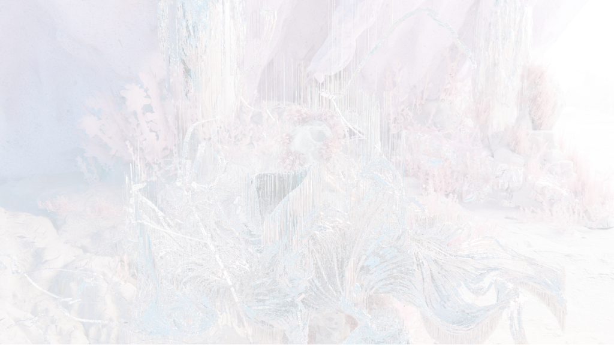
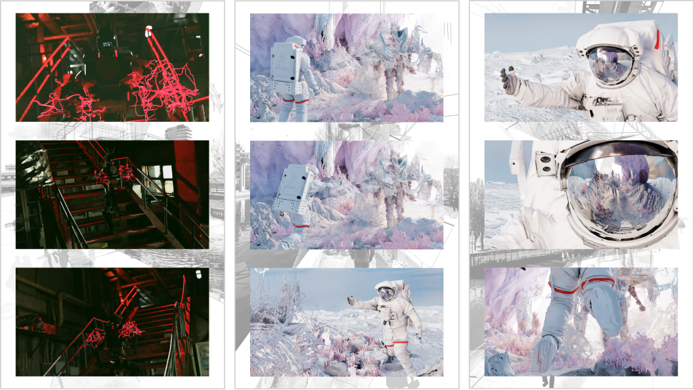

MIMESIS
DIGITAL-CLOTH DESIGN
复制人是否会梦见电子羊，一直是科学界的难题。随着科技的进步，人工智能的计算能力逐渐增强，生成式人工智能的发展使得AI逐步融入到人类生活的各个方面，成为人类的“工具”。然而，随着AI生成内容工具的普及，其滥用现象也日益严重。在这个智能化的时代，我们是否应该重新思考人与人工智能的关系？或许它们不再仅仅是可以选择的工具，而是成为了我们的“伙伴”和我们的“影子”。
因此，这款服饰的创意概念是“反机械，生命感”。我们将AI视为一种服饰，穿戴在自己身上，摆脱机械外壳，重塑新生命——我们也与AIGC建立了共生关系。
这个故事主要强调了想象力和人类意识拯救世界的愿景，以及生命力对抗机械化，创造一个美丽的家园。
